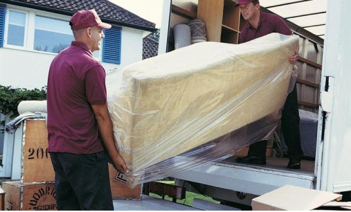
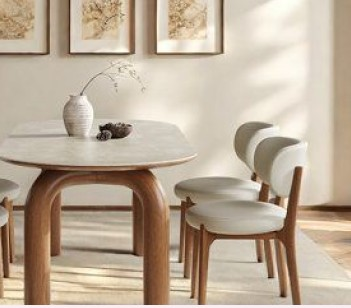
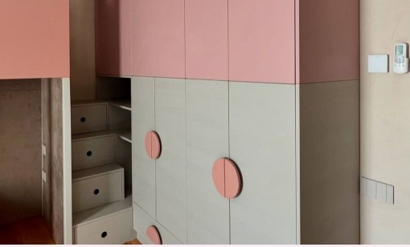
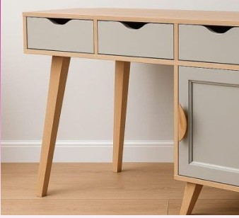
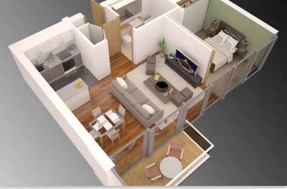
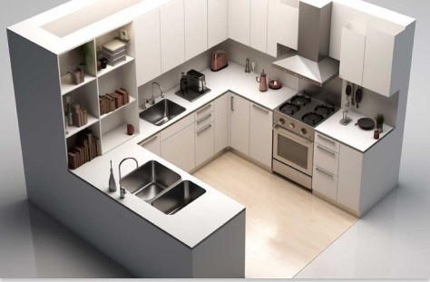
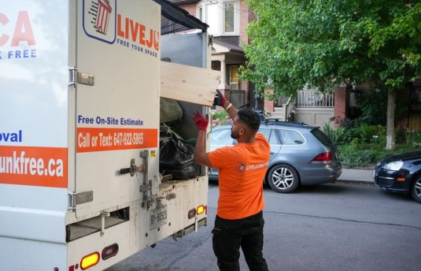
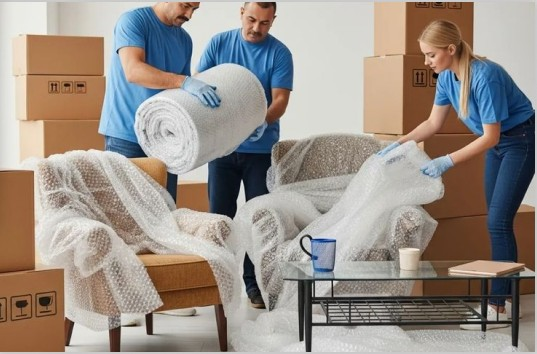

Servicii

La CasaNova Design, fiecare proiect începe cu dorința de a transforma spațiile în locuri pline de confort, echilibru și stil. Oferim servicii complete, de la mobilier realizat la comandă până la proiectare 3D și montaj profesionist, astfel încât fiecare client să primească soluții personalizate, adaptate perfect nevoilor și stilului său de viață. Indiferent de complexitate, fiecare etapă este realizată cu atenție, precizie și pasiune pentru designul bine gândit.
Mobilier la comandă



La CasaNova Design, fiecare piesă de mobilier este creată special pentru tine. Alegi materialele, finisajele, culorile și detaliile decorative, iar echipa noastră transformă ideile tale într-un produs unic și funcțional.
Dimensiuni: adaptate conform măsurătorilor exacte ale spațiului tău.
Politică returnare: conform legislației și condițiilor de personalizare.
Plată: plata în avans sau în rate flexibile.
Livrare: inclusă și programată conform preferințelor clientului.
Proiectare 3D / Randări Realiste

Proiectarea 3D îți oferă posibilitatea de a vizualiza încă dinaintea producției cum va arăta spațiul tău final. Folosim tehnologie modernă pentru a crea randări realiste, astfel încât fiecare detaliu — de la dimensiuni și culori până la texturi și lumină — să fie perfect aliniat cu așteptările tale.
Ce include serviciul:
- Vizualizare realistă a mobilierului și a întregului spațiu
- Simulări ale materialelor, culorilor și texturilor
- Ajustări până la aprobarea finală
- Recomandări personalizate din partea designerilor
- Plan tehnic complet pregătit pentru producție

Livrare + Montare Profesională

Echipa noastră de montatori profesioniști instalează mobilierul corect, stabil și perfect aliniat, conform proiectului aprobat.
Asigurăm livrare rapidă și sigură, direct la adresa ta, cu manipularea corespunzătoare a fiecărei piese de mobilier.
